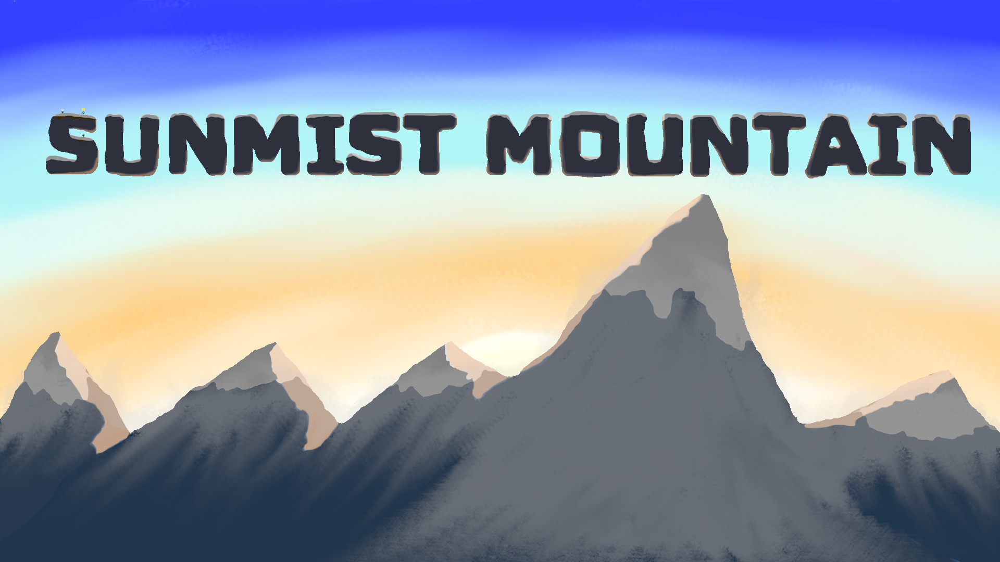

Welcome to our fun farming and life simulator, inspired by games like Stardew Valley. Take control over your own character with health and stamina meters to keep an eye on.
Get your hands dirty by preparing the soil, planting seeds, watering crops, harvesting, and selling your produce. Experience the never-ending world. Visit the shop to buy what you need!
Jump in and start building the farm of your dreams!
Controls
W - Move up
A - Move left
S - Move down
D - Move right
E - Open menu
R - Shop
I - Open inventory
TAB - Change toolbar
Use the mouse to choose tile
Left mouse: Use tool
Mouse wheel or keyboard numbers: choose item on toolbar

This is our group project for INF112 in spring 2024.